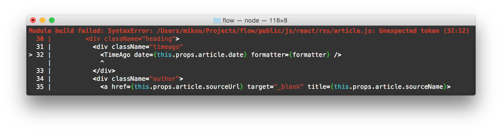

První věc, která nováčka v Reactu rozhodně praští do očí, je zápis XML (HTML) tagů přímo do JavaScriptového kódu bez apostrofů kolem. Takovýto zápis se ve světě Reactu nazývá JSX a ano, není to validní JS syntax. Před spuštěním se musí do JS kompilovat. Dnes si ukážeme, co je pod pokličkou JSX a že se vlastně není čeho bát.
Pojem "šablonovací systém" vám asi není neznámý. V oblasti webů má za úkol oddělit kód (např. PHP) od popisu struktury stránky. Známé příklady jsou Latte, Smarty nebo Twig. Ve světě JavaScriptu pak Closure Templates (Soy). Šablony obsahují jeden velký řetězec plný HTML, CSS a JS + nějaké speciální zápisy (proměnné, makra...). Šablonovací systém pak pomocí regulárních výrazů naplní šablonu daty a poslepuje z ní výsledný řetězec, který může poslat do prohlížeče. Skutečný proces může být i o něco složitější, ale princip zůstává stejný - jde o slepování řetězců.
Slepování řetězců funguje dobře na straně serveru, protože s reloadem celé stránky odpadá starost o stav stránky (například co bylo vyplněné ve formuláři) a vše se načte a spustí znova. Jenže co dělat, když chceme aktualizovat jenom malé výseky stránky pomocí DOMu? Můžeme nad upravovaným DOM elementem zavolat:
Element.innerHTML = '<div>Komponenta, kterou jsme aktualizovali</div>';Problém vyřešen. Naše šablony (řetězce) můžeme takto vložit na libovolné místo DOMu a navíc je to ještě velmi rychlé. Má to ale zásadní háček.
Pokud by naše komponenta měla na sobě pověšené listenery (například onClick), tak ty po innerHTML zmizí a musíme je opětovně navěsit. Co když bude v naší komponentě formulář a uživatel v něm bude mít zrovna něco rozepsané? Všechno mu během aktualizace zmizí. Aktualizování DOMu pomocí innerHTML je sice velmi rychlé, ale také velmi náchylné k chybám. Navíc si to přímo říká o XSS .
A tak vývojáři raději mění DOM postupně pomocí bezpečnějších metod typu Node.appendChild() či Node.replaceChild(). Problém vyřešen? Ne tak docela. Pěkné řetězcové šablony, kde na první pohled vidíme strukturu komponent, už nám najednou nestačí a naše zdrojáky musíme doplnit o různě dlouhé série Node metod, což je typické imperativní nepřehledné programování. Místo toho, abychom definovali jednotlivé stavy (podoby) našich komponent, musíme dávat dohromady sady kroků, kterými se z jednoho stavu dostaneme do druhého. Kdyby tak byla nějaká knihovna, která by tohle za nás vyřešila. Třeba React, že.
Definice komponent pomocí řetězců má tedy své limity. React však používá silnější nástroj - virtuální DOM (strom), který si vytvoří na základě render() metod, které popisují strukturu komponent pomocí funkcí. Tento virtuální DOM se pak pomocí appendChild či innerHTML promítne do DOMu skutečného a dojde tak k překreslení v prohlížeči. Pokud se u některé komponenty změní props nebo state, opětovně se zavolá metoda render(), vznikne nový virtuální DOM, porovná se s tím s předchozím a rozdíly se nejefektivnějším možným způsobem promítnou i do DOMu skutečného.
Jak se ale HTML dá převést na funkce? Názvy jednotlivých elementů nahradíme za názvy funkcí a z atributů (props) uděláme jeden velký argument - mapu. Vnořené elementy (děti) pak budou představovat další argumenty (mimochodem v React komponentě jsou přístupné pomocí this.props.children).
<form className="nameForm">
<input type="text" placeholder="Jméno" />
<input type="text" placeholder="Příjmení" />
<input type="submit" value="Poslat" />
</form>se zapíše jako:
form({className: 'nameForm'},
input({type: 'text', placeholder: 'Jméno'}),
input({type: 'text', placeholder: 'Příjmení'}),
input({type: 'submit', value: 'Poslat'})
)A to je celá věda kolem JSX. Je to jen triviální "syntax sugar", který dělá kód čitelnější a přístupnější pro lidi odkojené na HTML. Není tedy potřeba se učit nový jazyk, nová makra či nové zápisy. Stačí si vždy vzpomenout na to, že jde jen o prosté funkce. Reálný zápis je trošičku složitější:
import React from 'react';
export default class FormNoJSX extends React.Component {
render() {
return (
React.DOM.form({className: 'nameForm'},
React.DOM.input({type: 'text', placeholder: 'Jméno'}),
React.DOM.input({type: 'text', placeholder: 'Příjmení'}),
React.DOM.input({type: 'submit', value: 'Poslat'})
)
);
}
}Teď už i víte, proč je vždy potřeba na začátku importovat React. Pro pořádek ještě důkaz, že to funguje:
Nelíbí se vám opakované React.DOM? Můžeme si ho "vytknout" pomocí ES6 destruktoru:
render() {
const {form, input} = React.DOM;
return (
form({className: 'nameForm'},
input({type: 'text', placeholder: 'Jméno'}),
input({type: 'text', placeholder: 'Příjmení'}),
input({type: 'submit', value: 'Poslat'})
)
);
}A v takovém CoffeeScriptu, který je více expresivní než JS, by to vypadalo jako:
{form, input} = React.DOM;
render: ->
form {className: 'nameForm'},
input {type: 'text', placeholder: 'Jméno'}
input {type: 'text', placeholder: 'Příjmení'}
input {type: 'submit', value: 'Poslat'}Existuje dokonce i fork Coffee, kde lze používat JSX.
Jak vidíte, je tedy čistě na vás a vašich preferencích, kterou variantu si zvolíte. Můžete spokojeně používat React i úplně bez JSX. Nicméně, drtivá většina lidí JSX s Reactem používá a tak všechny příklady najdete v něm. JSX je pevnou součástí Babelu a brzy bude třeba i v TypeScriptu. Dostává se mu značné podpory i co se týče nástrojů, editorů a linterů. Stává se z něho průmyslový standard.
Teď když vidíte, co je výsledkem JSX transformace, tak by vám už mělo být i jasné, co všechno můžete a nemůžete zapsat do {}. Kód uzavřený v {} je jednoduše čistý JavaScript.
<div className={red}>
<button>{label}</button>
</div>se přeloží do
React.DOM.div({className: red}, React.DOM.button({}, label));Z toho je jasné, že například s
<div>{if (foo) {???}}</div>byste se nikam nedostali, ale
<div>{foo ? 'ahoj' : ''}</div>nebo
<div>{foo && 'ahoj'}</div>fungovat bude.
A v JavaScriptu můžete zase znova použít JSX:
<div>{foo && <button>Ahoj</button>}</div>Velmi často v JSX uvidíte různé mapovací funkce, které vrací pole React elementů:
<div>{cars.map(car => <div>{car.name}</div>}</div>A nyní už víte opravdu všechno. Pokud jste stále trochu zmatení, zkuste si napsat pár komponent. Uvidíte, že z JSX se stane "jazyk", který plně ovládnete během jednoho večera, protože si vždy velmi lehce můžete vydedukovat do čeho se kompiluje.
Najde se ale i pár dalších detailů, které stojí za zmínku. Občas se může stát, že chcete, aby nějaký váš vlastní atribut prošel až do výsledného DOM elementu:
<div my-attr="test" />Ovšem React neznámé atributy automaticky odstraní. Výjimku udělá, pokud použijete prefix data-:
<div data-attr="test" />Občas také můžete mít potřebu vložit někam "natvrdo" statický HTML kód, to se udělá takto:
<div dangerouslySetInnerHTML={{__html: '<b>Tohle se neescapuje!</b>'}} />Z názvu je už zřejmé, že jde o velmi nebezpečný postup, protože escapování zůstává jen a pouze na vás. Tímto úplně vyřadíte React a obsah se do stránky vloží pomocí innerHTML.
Jednou z velkých výhod definování pomocí funkcí je to, že pokud uděláte chybu, dostane se vám vždy pěkné a přesné zprávy, protože jste udělali chybu v JavaScriptovém kódu a nikoliv v nějakém řetězci, který se bude parsovat až buhví kdy.
Například chybějící uzavírací závorka:
<div className="timeago"
<TimeAgo date={this.props.article.date} formatter={formatter} />
</div>okamžitě vypíše tuto pěknou chybu v terminálu:

To je luxus, který se vám většinou při "slepování řetězců" nedostane.
Některé atributy se jmenují jinak kvůli kolizím s klíčovými slovy. Například toto nebude fungovat:
<div class="fooClass" />ale nebojte, dostane se vám ihned nápověda v konzoli:
Warning: Unknown DOM property class. Did you mean className?JSX pouze zpříjemňuje čitelnost komponent. Bude se líbit zejména kodérům. React však můžete plnohodnotně používat i zcela bez něj. Důležité je však to, co se skrývá pod ním - funkce. Funkce totiž poskytují skvělou a netušeně mocnou abstrakci pro skládání jednotlivých komponent. I po 2 letech od uvedení Reactu se tak stále objevují nové a lepší způsoby, jakými do sebe jednotlivé komponenty skládat, což si určitě ukážeme i v dalších dílech. To by nebylo možné, pokud by React a JSX nebyly pouze čistým JavaScriptem. Příště si ukážeme knihovnu Immutable.js a způsob jak díky ní 100x zrychlit už tak rychlou React aplikaci.